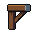
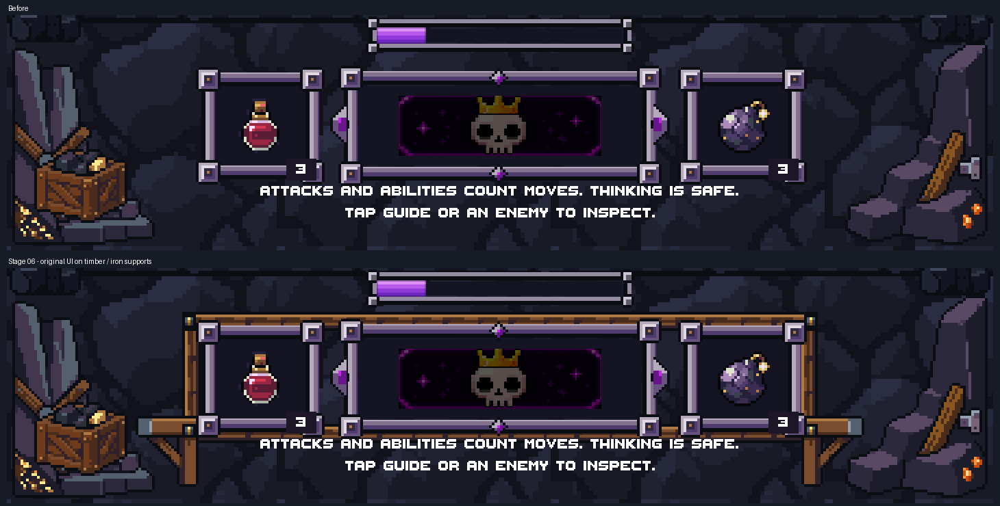
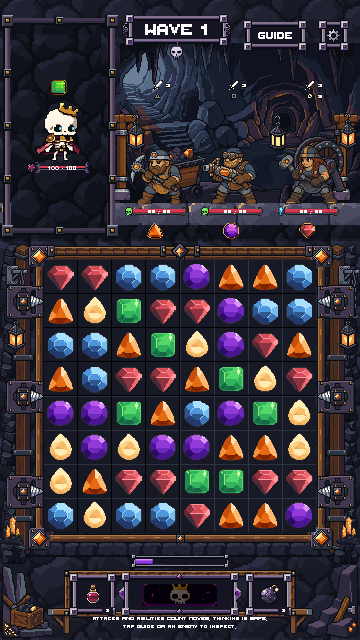
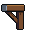
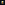
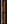
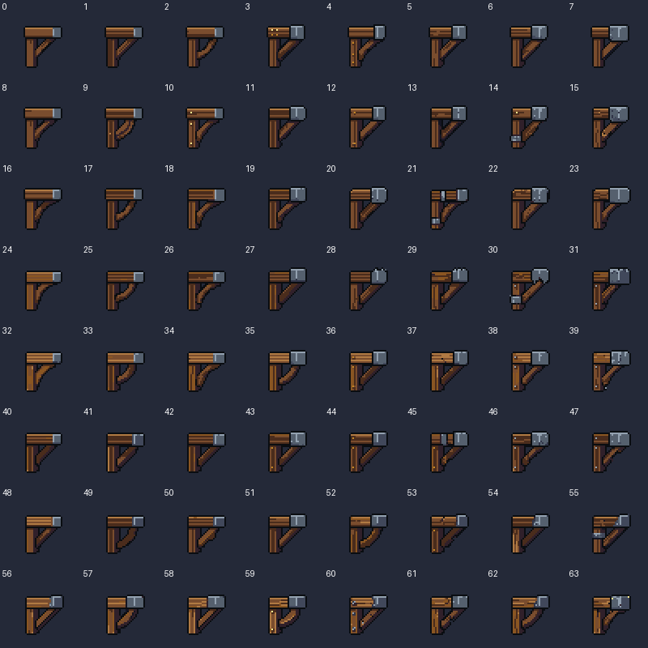

CorbelLeft
32 × 32 · 7 colors · binary alpha

Timber rails and iron corbels sit behind the unchanged potion, resonance and bomb controls. Small warm rivets tie them to the mine frame without adding clutter.
Actual Unity art-only renders; production Game unchanged. Stage 06 only. All approved source art, top, board, HUD graphics and layout are preserved. No merge. PixelLab: 10 generations spent; 192.20 remain. No image uploads.

Approved Stage 05

Stage 06 candidate


32 × 32 · 7 colors · binary alpha

32 × 32 · 7 colors · binary alpha

5 × 5 · 6 colors · binary alpha

7 × 24 · 5 colors · binary alpha

24 × 7 · 5 colors · binary alpha

Native checks · Unity checks · Final validation · Generation receipts and selection